zzlongplot: A Flexible Framework for Longitudinal Data Visualization
Ronald (Ryy) G. Thomas
2025-09-10
Source:vignettes/zzlongplot_introduction.Rmd
zzlongplot_introduction.RmdIntroduction
Longitudinal data visualization presents unique challenges that
require specialized plotting solutions. The zzlongplot
package addresses these challenges by providing a comprehensive,
flexible framework for creating publication-quality visualizations of
longitudinal data in R. Whether you’re conducting clinical trials,
educational assessments, or any research with repeated measurements over
time, zzlongplot offers intuitive functions that streamline
the creation of both observed value plots and change-from-baseline
visualizations.
The Challenge of Longitudinal Data Visualization
Researchers working with longitudinal data typically need to answer two fundamental questions:
- How do measurements change over time?
- How do these changes differ between groups or conditions?
To address these questions effectively, visualizations must:
- Display observed values at each time point
- Show changes relative to baseline measures
- Represent uncertainty appropriately
- Allow comparisons across different groups
- Accommodate both continuous time points (e.g., days, years) and categorical time points (e.g., “baseline”, “month1”, “month2”)
- Support faceting to explore interactions with additional variables
While base R graphics and packages like ggplot2 provide
powerful visualization capabilities, creating consistent,
publication-ready longitudinal plots often requires extensive custom
code. zzlongplot fills this gap by offering a specialized
suite of functions designed specifically for longitudinal data
visualization.
Key Features of zzlongplot
The zzlongplot package offers several advantages for
researchers working with longitudinal data:
1. Flexible Data Structure Support
- Works with both continuous and categorical time variables
- Handles both balanced and unbalanced designs
- Supports grouped data for comparing different conditions
- Allows for flexible specification of baseline values
2. Comprehensive Visualization Options
- Generate observed value plots showing raw measurements over time
- Create change-from-baseline plots highlighting differences from starting points
- Combine both plot types side-by-side for comprehensive reporting
- Customize axis labels, titles, and other plot elements
3. Statistical Representation Choices
- Visualize uncertainty with either error bars or confidence ribbons
- Automatically calculate and display standard errors
- Handle within-subject clustering for more accurate error estimation
4. Formula-Based Interface
zzlongplot employs a formula-based interface similar to
those used in statistical modeling functions, making it intuitive for R
users:
# Basic usage
lplot(data, y ~ x | group)
# With faceting
lplot(data, y ~ x | group, facet_form = facet_y ~ facet_x)This consistent syntax provides a familiar experience while offering substantial flexibility.
Package Architecture
The zzlongplot package consists of several core
functions:
-
lplot(): The main user-facing function that creates longitudinal plots -
parse_formula(): Processes the formula notation that specifies the plotting variables -
compute_stats(): Calculates summary statistics for different groups and time points -
generate_plot(): Creates the actual visualizations using ggplot2 -
get_colorblind_palette(): Provides accessible color schemes for plots
These functions work together to deliver a streamlined workflow for creating sophisticated longitudinal visualizations with minimal code.
Getting Started with zzlongplot
Let’s begin by creating a sample dataset with longitudinal measurements that we’ll use throughout this vignette.
Creating Sample Data
First, we’ll create a dataset with continuous time points:
# Set seed for reproducibility
set.seed(123)
# Create sample data with continuous time points
continuous_data <- data.frame(
subject_id = rep(1:50, each = 4),
visit_time = rep(c(0, 4, 8, 12), times = 50), # Weeks from baseline
outcome = NA, # Will fill this with simulated data
group = rep(c("Treatment", "Placebo"), each = 2, length.out = 200)
)
# Generate outcome data with treatment effect increasing over time
for (subject in unique(continuous_data$subject_id)) {
subject_rows <- which(continuous_data$subject_id == subject)
baseline <- 50 + rnorm(1, 0, 5) # Baseline value with some variation
is_treatment <- continuous_data$group[subject_rows[1]] == "Treatment"
# Treatment effect increases over time, placebo has minimal effect
effect_size <- if (is_treatment) c(0, 3, 7, 12) else c(0, 1, 1.5, 2)
# Add individual trajectory with some random noise
continuous_data$outcome[subject_rows] <- baseline + effect_size + rnorm(4, 0, 3)
}
# Look at the first few rows of our data
head(continuous_data, 8)#> subject_id visit_time outcome group
#> 1 1 0 46.50709 Treatment
#> 2 1 4 54.87375 Treatment
#> 3 1 8 54.40915 Placebo
#> 4 1 12 59.58548 Placebo
#> 5 2 0 59.95807 Treatment
#> 6 2 4 57.78014 Treatment
#> 7 2 8 63.51477 Placebo
#> 8 2 12 69.23834 PlaceboNext, let’s create a dataset with categorical time points:
# Create sample data with categorical time points
categorical_data <- data.frame(
subject_id = rep(1:50, each = 4),
visit = rep(c("Baseline", "Month1", "Month3", "Month6"), times = 50),
score = NA, # Will fill this with simulated data
treatment = rep(c("Drug A", "Drug B", "Placebo"), length.out = 50, each = 4),
site = rep(c("Site 1", "Site 2"), length.out = 200) # For faceting examples
)
# Generate score data with different treatment effects
for (subject in unique(categorical_data$subject_id)) {
subject_rows <- which(categorical_data$subject_id == subject)
baseline <- 25 + rnorm(1, 0, 3) # Baseline value
# Different effects for different treatments
treatment_type <- categorical_data$treatment[subject_rows[1]]
if (treatment_type == "Drug A") {
effect_size <- c(0, 5, 8, 10) # Strong effect
} else if (treatment_type == "Drug B") {
effect_size <- c(0, 4, 5, 7) # Moderate effect
} else {
effect_size <- c(0, 2, 2, 3) # Weak effect (placebo)
}
# Add individual trajectory with some random noise
categorical_data$score[subject_rows] <- baseline + effect_size + rnorm(4, 0, 2)
}
# Look at the first few rows of our data
head(categorical_data, 8)#> subject_id visit score treatment site
#> 1 1 Baseline 22.74944 Drug A Site 1
#> 2 1 Month1 28.18536 Drug A Site 2
#> 3 1 Month3 32.05418 Drug A Site 1
#> 4 1 Month6 37.07021 Drug A Site 2
#> 5 2 Baseline 26.89590 Drug B Site 1
#> 6 2 Month1 29.99581 Drug B Site 2
#> 7 2 Month3 29.50702 Drug B Site 1
#> 8 2 Month6 28.66850 Drug B Site 2Basic Usage: Simple Longitudinal Plot
Let’s start with the most basic usage of zzlongplot:
creating a simple plot of outcome over time.
# Basic plot showing outcome over time
lplot(continuous_data,
form = outcome ~ visit_time,
cluster_var = "subject_id",
baseline_value = 0,
title = "Outcome Over Time",
xlab = "Weeks",
ylab = "Outcome Measure")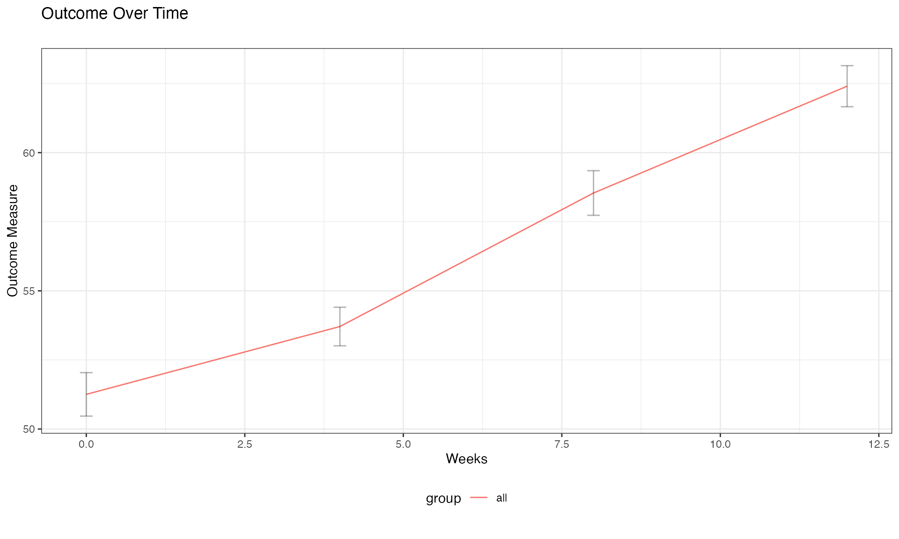
In this example, we’ve used a simple formula
outcome ~ visit_time to specify that we want to plot the
outcome variable on the y-axis against the visit time on the x-axis.
Since we haven’t specified a grouping variable, all subjects are plotted
together.
Adding Grouping with Formula Syntax
Now, let’s use the formula syntax to add grouping by treatment:
# Plot with grouping by treatment
lplot(continuous_data,
form = outcome ~ visit_time | group,
cluster_var = "subject_id",
baseline_value = 0,
title = "Treatment Effect Over Time",
xlab = "Weeks",
ylab = "Outcome Measure")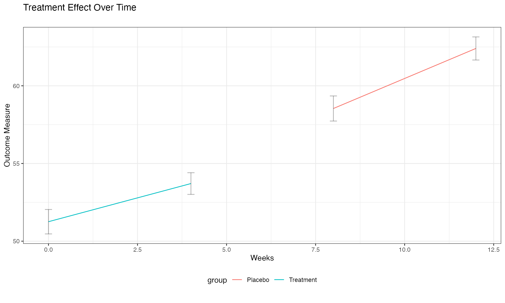
The formula outcome ~ visit_time | group tells
zzlongplot to: - Plot outcome on the y-axis - Use
visit_time for the x-axis - Group and color the lines by the “group”
variable
This makes it easy to compare trajectories between different treatment groups.
Visualizing Change from Baseline
One of the key features of zzlongplot is the ability to
visualize changes from baseline. Let’s create a plot showing both
observed values and changes:
# Plot both observed values and change from baseline
lplot(continuous_data,
form = outcome ~ visit_time | group,
cluster_var = "subject_id",
baseline_value = 0,
plot_type = "both",
title = "Observed Outcomes",
title2 = "Change from Baseline",
xlab = "Weeks",
ylab = "Outcome Measure",
ylab2 = "Change in Outcome")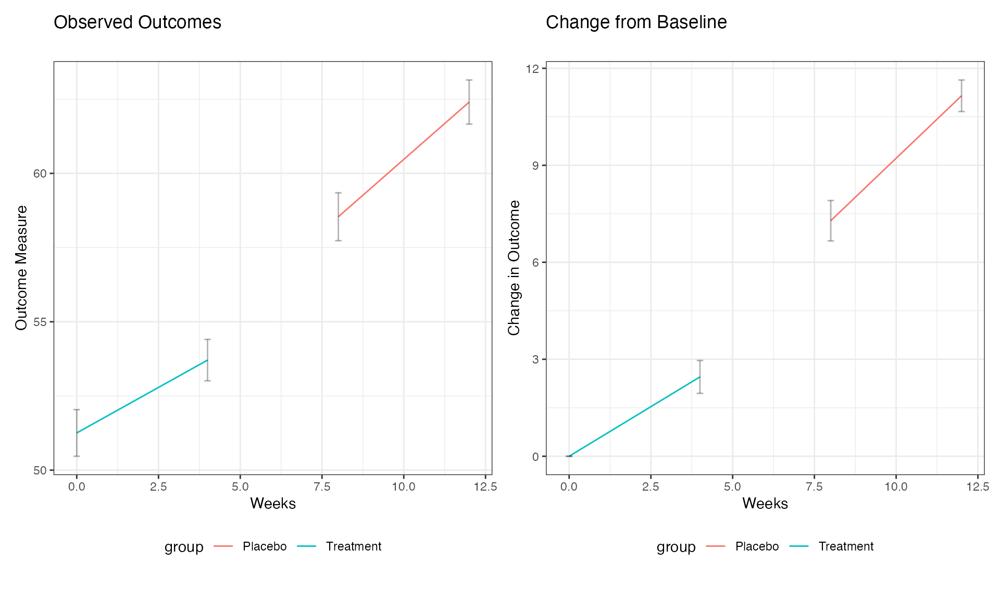
By setting plot_type = "both", we get two side-by-side
plots: 1. The left plot shows the observed values 2. The right plot
shows the change from baseline
This makes it easy to see both the absolute measurements and the relative changes in one figure.
Working with Categorical Time Points
Now let’s demonstrate how zzlongplot handles categorical
time points using our second dataset:
# Plot with categorical time points
lplot(categorical_data,
form = score ~ visit | treatment,
cluster_var = "subject_id",
baseline_value = "Baseline",
title = "Treatment Comparison",
xlab = "Visit",
ylab = "Score")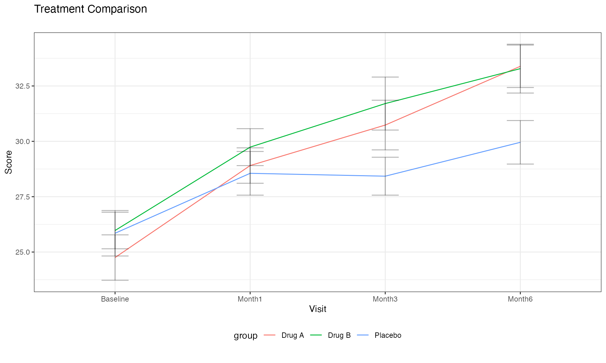
Notice that we’ve specified baseline_value = "Baseline"
to indicate the baseline level of our categorical variable. The formula
syntax remains the same regardless of whether the x-variable is
continuous or categorical.
Adding Facets with Formula Syntax
zzlongplot supports faceting to examine how effects
might differ across another variable. Let’s add faceting by site:
# Plot with faceting by site
lplot(categorical_data,
form = score ~ visit | treatment,
facet_form = ~ site,
cluster_var = "subject_id",
baseline_value = "Baseline",
title = "Treatment Comparison by Site",
xlab = "Visit",
ylab = "Score")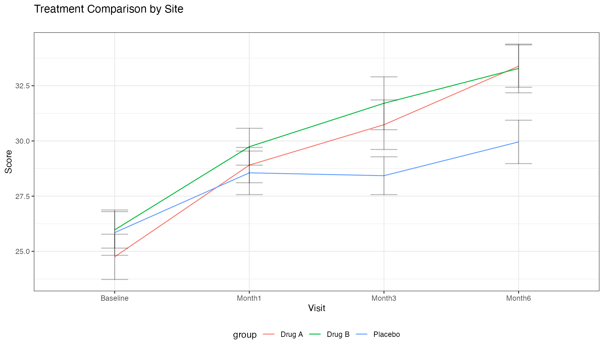
The facet_form = ~ site syntax tells
zzlongplot to create separate panels for each level of the
“site” variable. This allows for easy comparison of treatment effects
across different sites.
Customizing Error Representation
By default, zzlongplot uses error bars to represent
standard error. We can switch to confidence bands using the
error_type parameter:
# Using confidence bands instead of error bars
lplot(categorical_data,
form = score ~ visit | treatment,
cluster_var = "subject_id",
baseline_value = "Baseline",
error_type = "band",
title = "Treatment Comparison with Confidence Bands",
xlab = "Visit",
ylab = "Score")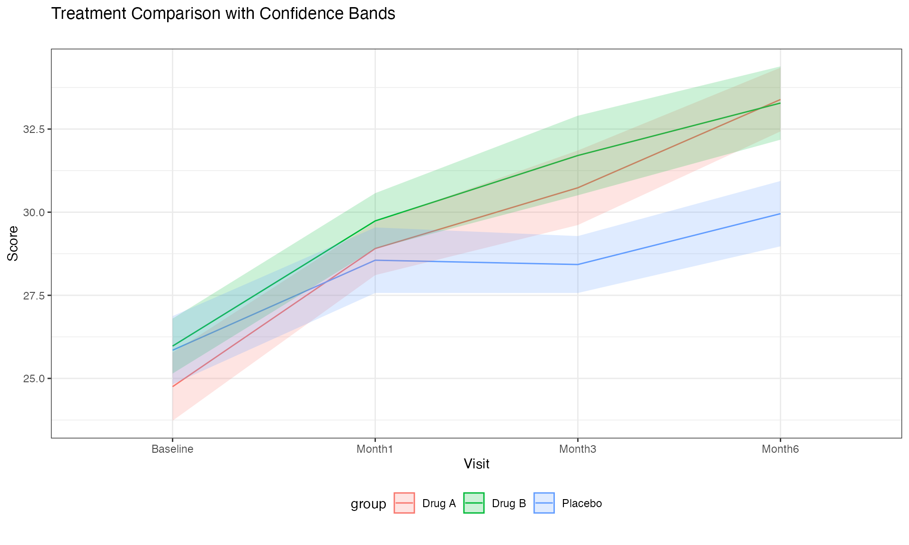
Confidence bands can sometimes provide a cleaner visualization, especially when multiple groups are being compared.
Using Color Palettes
zzlongplot includes support for custom color palettes.
Let’s define our own colorblind-friendly palette:
# Define a colorblind-friendly palette manually
# These colors are based on the ColorBrewer "Dark2" palette
custom_colors <- c("#1B9E77", "#D95F02", "#7570B3")
# Apply custom colors to the plot
lplot(categorical_data,
form = score ~ visit | treatment,
cluster_var = "subject_id",
baseline_value = "Baseline",
color_palette = custom_colors,
title = "Treatment Comparison with Custom Colors",
xlab = "Visit",
ylab = "Score")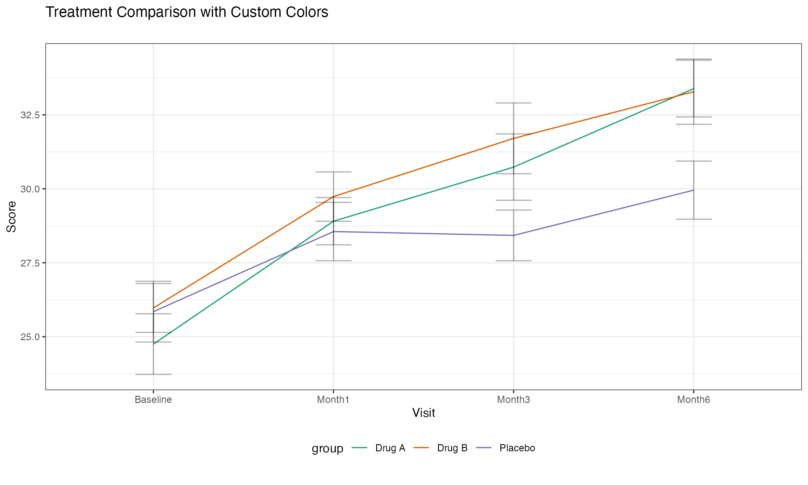
Note: The full version of the zzlongplot package
includes a get_colorblind_palette() function that
automatically generates appropriate color schemes, but we’re using a
manual definition here for demonstration purposes.
This ensures that your visualizations are accessible to readers with color vision deficiencies.
Advanced Usage Examples
Let’s explore some more advanced use cases that demonstrate the
flexibility of zzlongplot.
Complex Formula: Multiple Grouping Variables
The formula interface supports multiple grouping variables by
combining them with +:
# First, add a secondary grouping variable to our data
categorical_data$gender <- rep(c("Female", "Male"), length.out = nrow(categorical_data))
# Plot with two grouping variables
lplot(categorical_data,
form = score ~ visit | treatment + gender,
cluster_var = "subject_id",
baseline_value = "Baseline",
title = "Treatment by Gender Interaction",
xlab = "Visit",
ylab = "Score")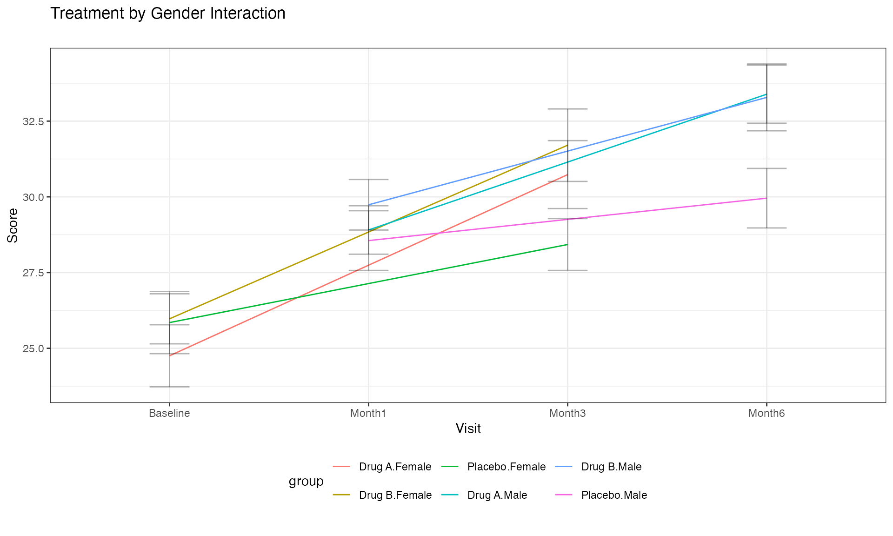
The formula score ~ visit | treatment + gender creates
groups for each combination of treatment and gender, allowing us to
examine potential interactions between these variables.
Multi-facet Formula
We can also use formulas to create complex faceting arrangements:
# Add another variable for faceting
categorical_data$age_group <- rep(c("Young", "Middle", "Elder"), length.out = nrow(categorical_data))
# Create a plot with multi-dimensional faceting
lplot(categorical_data,
form = score ~ visit | treatment,
facet_form = age_group ~ site,
cluster_var = "subject_id",
baseline_value = "Baseline",
title = "Treatment Effects Across Age Groups and Sites",
xlab = "Visit",
ylab = "Score")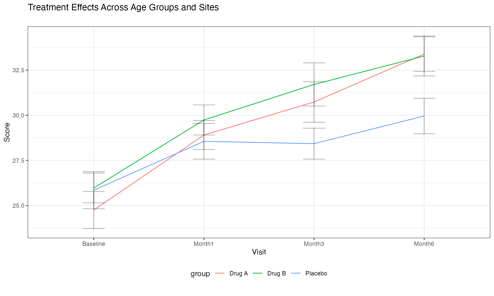
The facet_form = age_group ~ site syntax creates a grid
of panels with age groups as rows and sites as columns, allowing for a
comprehensive comparison across multiple dimensions.
Custom Analysis: Non-Standard Baseline
Sometimes we might want to use a non-standard time point as our
baseline. zzlongplot makes this easy:
# Using a non-zero time point as baseline for continuous data
lplot(continuous_data,
form = outcome ~ visit_time | group,
cluster_var = "subject_id",
baseline_value = 4, # Using week 4 as baseline instead of week 0
plot_type = "both",
title = "Outcomes (Week 4 as Baseline)",
title2 = "Change from Week 4",
xlab = "Weeks",
ylab = "Outcome Measure",
ylab2 = "Change from Week 4")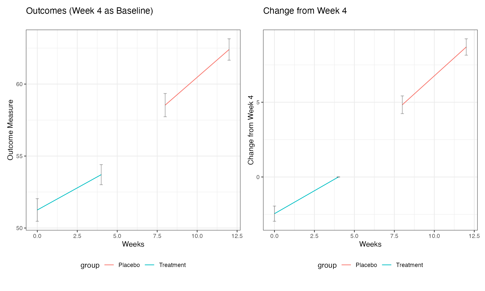
By setting baseline_value = 4, we’re using Week 4 as our
reference point rather than the usual Week 0. This flexibility allows
for various analysis approaches, such as examining how later
measurements compare to mid-study values.
Clinical Trial Example with Responder Analysis
Let’s demonstrate a more complex example typical in clinical trials, where we might want to analyze both raw scores and responder status:
# Create a clinical trial dataset
clinical_data <- data.frame(
subject_id = rep(1:60, each = 5),
visit_week = rep(c(0, 2, 4, 8, 12), times = 60),
pain_score = NA,
responder = NA, # Will define responders as those with ≥30% improvement
treatment = rep(c("Active", "Control"), each = 5, length.out = 300),
site = rep(c("Site A", "Site B", "Site C"), length.out = 300)
)
# Generate pain scores (0-10 scale, higher = worse pain)
for (subject in unique(clinical_data$subject_id)) {
subject_rows <- which(clinical_data$subject_id == subject)
baseline <- 7 + rnorm(1, 0, 1) # Most patients start with severe pain
# Different effects for different treatments
is_active <- clinical_data$treatment[subject_rows[1]] == "Active"
# Effect sizes (pain reduction)
if (is_active) {
effect_size <- c(0, 1, 2, 3, 3.5) # Stronger pain reduction
} else {
effect_size <- c(0, 0.5, 1, 1.2, 1.5) # Weaker pain reduction
}
# Add individual trajectory with some random noise
clinical_data$pain_score[subject_rows] <- pmax(0, baseline - effect_size + rnorm(5, 0, 1))
}
# Calculate responder status (≥30% improvement from baseline)
clinical_data <- clinical_data %>%
group_by(subject_id) %>%
mutate(
baseline_score = pain_score[visit_week == 0],
pct_improvement = (baseline_score - pain_score) / baseline_score * 100,
responder = ifelse(pct_improvement >= 30, "Responder", "Non-responder")
) %>%
ungroup()
# Plot pain scores over time
pain_plot <- lplot(clinical_data,
form = pain_score ~ visit_week | treatment,
cluster_var = "subject_id",
baseline_value = 0,
title = "Pain Score Over Time",
xlab = "Week",
ylab = "Pain Score (0-10)")
# Calculate responder percentages
responder_data <- clinical_data %>%
dplyr::filter(visit_week > 0) %>% # Exclude baseline
group_by(treatment, visit_week) %>%
summarize(
n_subjects = n(),
n_responders = sum(responder == "Responder"),
pct_responders = n_responders / n_subjects * 100,
.groups = "drop"
)
# Create a custom plot for responder rates
responder_plot <- ggplot(responder_data, aes(x = visit_week, y = pct_responders, color = treatment, group = treatment)) +
geom_line() +
geom_point(size = 3) +
labs(title = "Responder Rates (≥30% Improvement)",
x = "Week",
y = "Percent of Responders",
color = "Treatment") +
theme_bw() +
theme(legend.position = "bottom")
# Combine the plots using patchwork
pain_plot + responder_plot + patchwork::plot_layout(ncol = 2)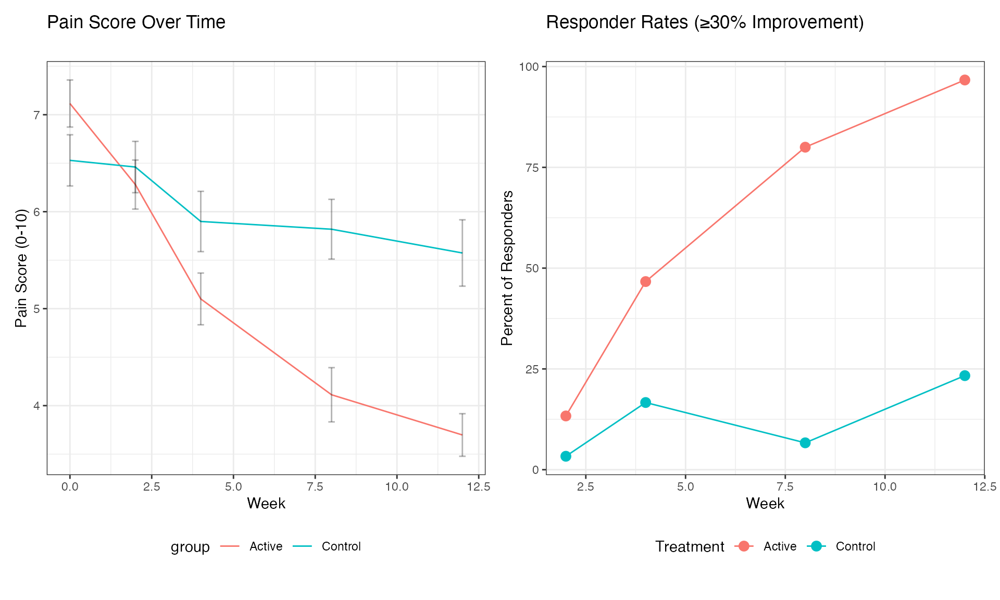
This example demonstrates how zzlongplot can be
integrated into a more comprehensive analysis workflow, combining
standard longitudinal visualizations with custom plots for derived
endpoints.
Formula Syntax Reference
The zzlongplot package uses a formula-based interface
that follows these patterns:
-
Basic formula:
y ~ x-
y: The outcome or dependent variable to plot on the y-axis -
x: The time or visit variable to plot on the x-axis
-
-
With grouping:
y ~ x | group-
group: A variable used to group and color the data
-
-
With multiple grouping variables:
y ~ x | group1 + group2- Creates groups for each combination of the grouping variables
-
With faceting: Use the separate
facet_formparameter-
~ facet_var: Creates columns for each level offacet_var -
facet_var ~: Creates rows for each level offacet_var -
facet_row ~ facet_col: Creates a grid with rows and columns
-
This formula syntax is designed to be intuitive for R users familiar with model formulas, while providing the flexibility needed for complex visualization scenarios.
Best Practices for Longitudinal Visualization
When using zzlongplot for your research, consider these
best practices:
Choose meaningful baselines: The choice of baseline can significantly impact the interpretation of change values.
Consider both observed and change plots: Observed values show absolute measurements, while change plots highlight relative differences. Both provide valuable insights.
Use appropriate error representation: Error bars work well for categorical x-variables with few levels, while confidence bands may be preferable for continuous x-variables or when comparing many groups.
Apply colorblind-friendly palettes: Ensure your visualizations are accessible to all readers by using appropriate color palettes, such as the ones from the ColorBrewer package (e.g., “Dark2” for categorical data).
Leverage faceting judiciously: Faceting can reveal important patterns but can also make plots complex. Use it when comparing across important categorical variables.
Provide clear labels and titles: Ensure your plots have informative axis labels, titles, and legends to guide interpretation.
Conclusion
The zzlongplot package provides a flexible and powerful
framework for visualizing longitudinal data in R. Its formula-based
interface, combined with comprehensive options for customization, makes
it an invaluable tool for researchers working with repeated measures
data across various fields.
By following the examples and guidelines in this vignette, you can create publication-quality visualizations that effectively communicate patterns, trends, and group differences in your longitudinal data.
Session Info
#> R version 4.5.1 (2025-06-13)
#> Platform: aarch64-apple-darwin20
#> Running under: macOS Sequoia 15.6.1
#>
#> Matrix products: default
#> BLAS: /Library/Frameworks/R.framework/Versions/4.5-arm64/Resources/lib/libRblas.0.dylib
#> LAPACK: /Library/Frameworks/R.framework/Versions/4.5-arm64/Resources/lib/libRlapack.dylib; LAPACK version 3.12.1
#>
#> locale:
#> [1] en_US.UTF-8/en_US.UTF-8/en_US.UTF-8/C/en_US.UTF-8/en_US.UTF-8
#>
#> time zone: America/Los_Angeles
#> tzcode source: internal
#>
#> attached base packages:
#> [1] stats graphics grDevices utils datasets methods base
#>
#> other attached packages:
#> [1] patchwork_1.3.1 ggplot2_3.5.2 dplyr_1.1.4
#> [4] zzlongplot_0.0.0.1000
#>
#> loaded via a namespace (and not attached):
#> [1] gtable_0.3.6 jsonlite_2.0.0 compiler_4.5.1 tidyselect_1.2.1
#> [5] jquerylib_0.1.4 systemfonts_1.2.3 scales_1.4.0 textshaping_1.0.1
#> [9] yaml_2.3.10 fastmap_1.2.0 R6_2.6.1 labeling_0.4.3
#> [13] generics_0.1.4 knitr_1.50 htmlwidgets_1.6.4 conflicted_1.2.0
#> [17] tibble_3.3.0 desc_1.4.3 bslib_0.9.0 pillar_1.11.0
#> [21] RColorBrewer_1.1-3 rlang_1.1.6 cachem_1.1.0 xfun_0.52
#> [25] fs_1.6.6 sass_0.4.10 memoise_2.0.1 cli_3.6.5
#> [29] withr_3.0.2 pkgdown_2.1.3 magrittr_2.0.3 digest_0.6.37
#> [33] grid_4.5.1 lifecycle_1.0.4 vctrs_0.6.5 evaluate_1.0.4
#> [37] glue_1.8.0 farver_2.1.2 ragg_1.4.0 rmarkdown_2.29
#> [41] tools_4.5.1 pkgconfig_2.0.3 htmltools_0.5.8.1